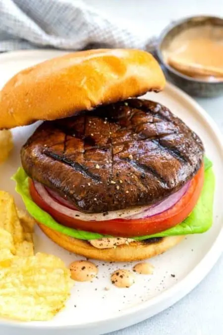

Menú
Burgers

Porto-O-Burger
Nuestra primera y clásica burger con los deliciosos ingredientes que ya conocés.
Rever-Burger
Otra forma el delicioso hongo Portobello en esta burger con torta de tofu frito.

Acompañamientos
Papas tostadas
Crujientes papitas tostadas que le darán un cruch extra a tu experiencia con las burgers.

Papas fritas
Clásicas e inigualables papitas a la francesas siempre recién hechas crujientes y jugosas.

Salsa Picante
Elaborada con dos tipos de chiles y vegetales fermentados durante dos semanas. Picante Medio-Alto.

Cervezas
Super Gosé
Refrescante, ácida y un poco salada, baja en amargor y con 4%. Como una michelada recién preparada.

Midnigth Porter
Tostada, aromática, con una mediana adición de avena, de amargor medio y con gran cuerpo y 5.5%.

Bebidas
Jugo de manzana
Ligera bebida de manzana sin azúcar añadida, hecho cada mañana en nuestra barra.

Jugo de piña
Delicioso jugo de piña elaborado en el momento. Perfecto para acompañar nuestros postres.

Té de durazno
Refrescante y delicioso té negro con durazno. Endulzalo con caña dulce, o agave a tu gusto.

Postres
Queque NaranChoco
Esponjoso queque sabor naranja, con una exquisita base solida de chocolate semi amargo oscuro.

Tiramizú
Nuestra versión del clásico postre italiano. A base de coco, café y nuestra Midnigth Porter.

Conocé nuestros ingredientes
El inicio de una buena burger
Nuestro pan es hecho en casa, a base de masa madre y fermentado durante 12 horas antes de entrar al horno, para lograr sus notas únicas en aroma y sabor.

El infaltable y cremoso
Suave y amado a nivel mundial, le aporta a nuestra Port-O-Burger una capa más de sabor, que se integra
perfectamente con la estrella del menú.

Ahumado, un poco dulce y rojo
Otro ingrediente producido en casa, es el chile dulce de nuestra Porto-O-Burger Clásica.Lo azamos lento
para seguirle dando más textura y sabor a tu burger.

Caramelizada y sazonada al punto
Cebollas blancas y deliciosas, caramelizadas durante tres horas y sazonadas al punto con pimienta blanca, nuez
moscada y sal rosada. Si, podés pedir extra.

La Estrella de la casa
Su sabor umami, delicadamente terroso y sutilmente dulce nos encanta. Encontralo como la "torta" en nuestra
Port-O-Burger Clásica o como "pan" en nuestra Rever-Burger.

Fresca, ligera y tersa
Otro ingrediente infaltable en una buena burger. Usamos lechuga Mantecosa, que aporta notas suaves y
florales, logrando un sabor único en nuestras Burgers.

Jugoso Canario
Originario de las Islas Canarias, este tomate redondo con su sabor jugoso, ligeramente ácido y dulce también es
producido en casa.

El jugador sorpresa
Esta es la última adición a la receta de nuestras Burgers. Elaborado a partir de leche de avena y coco, sus
notas ahumadas y sabor increíble te sorprenderán.